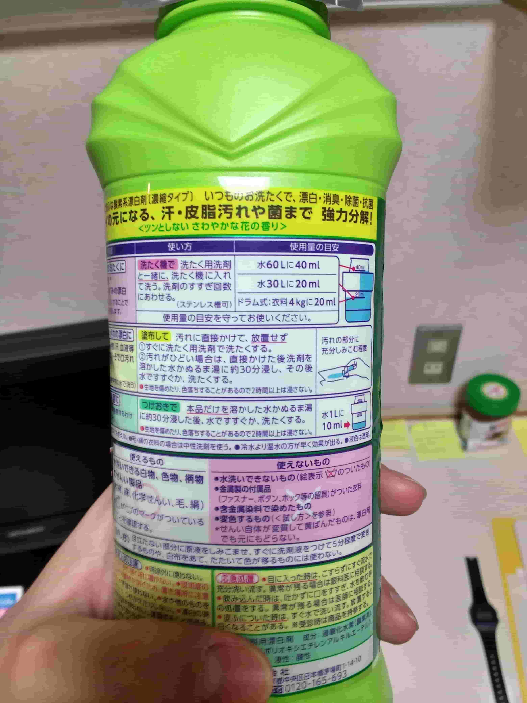
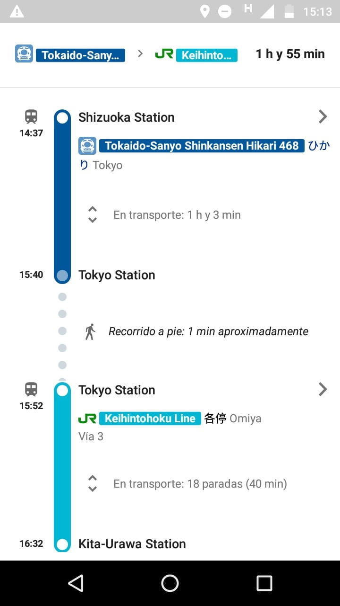

20 cosas sorprendentes que pasan en Japón Parte 1
Tuve la oportunidad de vivir 6 meses en la prefectura de Saitama gracias a una beca de la Japan Foundation, la misma fundación que crea los exámenes JLPT y promueve la enseñanza del idioma japonés en el extranjero. Estando en Japón, viví muchas experiencias que me enriquecieron y me hicieron crecer como persona. Es por ello que, con la siguiente serie de artículos, quiero compartir todas esas nuevas cosas y choques culturales que me ocurrieron durante mi estancia en el país del Sol Naciente.
1. Todo habla
Desde el ascensor, el aire acondicionado, hasta las luces del semáforo y los stands de productos en los almacenes, todo tiene una voz propia. Al comienzo pensé que era para dar esa impresión de que todo es robotizado, pero no! Todo ello es con el fin de servir de apoyo a las personas con discapacidades.
2. La gente habla muy rápido!
Yo vengo de escuchar japonés en libros como el Minna No Nihongo, Genki o de hablar un par de veces con japoneses, por lo que, me pareció un gran desafío al comienzo, entender o seguir una conversación en japonés. A pesar de que veía anime y películas japonesas, en mi experiencia, esto no me ayudó mucho porque siempre confié de los subtitulos.

3. Pensar en japonés

Además del desafío de escuchar en japonés, tratar de seguir los temas de conversación en velocidad natural fue bastante complicado al comienzo.
Cada vez, pensaba en español lo que iba a decir, traducía al japonés en mi mente y cuando lo queria decir, las personas con las que hablaba ya habían cambiado de tema de conversación. Seguir éste proceso te hará bastante lento hablando otro idioma pero una vez que te acostumbres a pensar en ese otro idioma, estarás un paso más cerca de la fluidez verbal. ¡Tu puedes!
4. Tomar clases en japonés

Si pensabas que escuchar y hablar en japonés era difícil, trata de ecuchar y tomar notas en japonés mientras tu profesor dicta la clase. Es todo un reto al comienzo pero después te acostumbras (y te acostumbras a que tus kanji queden como "garabatos entendibles" jejeje). Esto debe ser mas sencillo para las personas que ya vienen estudiando japonés con un profesor nativo en una clase donde se habla 100% el idioma.
5. Siguiendo instrucciones
Las cosas más cotidianas de la vida, como las instrucciones del aire acondicionado, lavadoras, entre otras cosas, se volvieron todo un reto por las barreras del idioma. Recordé una anéctoda de cuando tuve que usar un blanqueador y no sabía leer las instrucciones jajaja. Aunque los dibujitos ayudan, solo lo hacen un poco.

6. Caminar por el lado izquierdo

Al comienzo fue algo extraño porque cuando estaba desprevenido me pasaba al lado derecho. Uno se acostumbra rápido a este tipo de cosas de la vida diaria.
La foto de arriba fue tomada en una escuela primaria en Japón y como dato curioso, no se porque a los niños les enseñaban a caminar por el lado derecho. ¿Alguien sabe por qué?
7. Respetar el lado por donde subir las escaleras eléctricas

En Japón tu subes por el lado izquierdo y te quedas de pie mientras la escalera eléctrica sube (o baja). Esto lo haces con el propósito de dejar el espacio derecho disponible para que las personas que tienen prisa pasen caminando o corriendo por la escalera.
Lo curioso es que mientras esta "regla" se respeta en la región de Kanto, en Kansai sucede lo opuesto. Se sube las escaleras por la derecha.
8. Respetar las reglas de los trenes

Adentro en los trenes hay avisos por todas partes para que:
- Coloques tu celular en silencio.
- Hagas la fila para abordar el tren.
- Cedas los asientos a los ancianos o discapacitados.
- Si es necesario, hacerte a un lado mientras que se bajen las personas que llegan del tren, antes de tu subirte a él.
Son normas que la mayoría de la gente obedece a cabalidad y, para mi, son esos finos detalles que hacen más placentero viajar por tren en Japón, inclusive si el tren está algo lleno.
9. Como usar los trenes

Desde como calcular los costos de las distancias, comprar y recargar tu tarjeta de tren (en mi caso usaba una SUICA) hasta como usar aplicaciones para saber en que estación bajarte y a que horas pasaban los trenes. Son cosas repetitivas y del día a día que harán que te acostumbres al sistema, a MUCHOS kanji, vocabulario nuevo y expresiones usadas en este contexto.
10. Las carreteras y autopistas

Fue algo que me facinó desde el primer momento que llegué. Viniendo de un país del 3er mundo como Colombia, no estaba acostumbrado a carreteras en buen estado y a autopistas elevadas. Habían lugares que tenían como 3 o 4 pisos de carreteras en varias direcciones.

11. Los inodoros
Esto fue un shock al comienzo, y siendo sincero, me daba algo de asco usar los comandos del control de agua y aire para asearte luego de terminar. Lo otro que me sorprendió es que tampoco esperaba que parecieran un tablero de control de un avión!!!! o sea, ¿¡por qué rayos tantos botones en un inodoro!? me dije a mi mismo en algún momento.
12. Obentos y Seven Eleven
¿Quieres comer o comprar algo a las 11pm o a las 12am? ¡bam! ve al konbini y comprate algo. Están abiertos las 24 horas del día, los 7 días a la semana y cuentan con un servicio de baños gratuito. Eso si, prepárate para los precios, van a ser algo más costosos que los supermercados.
13. El sabor de las comidas

Para mi la experiencia se resumió en comer comida light (a excepción por supuesto, de las frituras). Comer todo bajo en sal, bajo en azúcar y grasa fue una experiencia agradable, excepto por el misoshiru, no lo soporte por un tiempo. No aguanté tomarlo todos los días. Para los que no lo saben el misoshiru es una sopita sin sabor y con verduras que me servían con todas las comidas del día.
14. La televisión
Fui con la idea de que esperaría encontrar propagandas extrañas como las que vemos siempre en algúna noticia o video en youtube, pero lo que me encontré fue algo totalmente distinto. Si bien habían comerciales extraños (en 6 meses vi 1 ó 2), los programas de variedades son el tipo de programa que manda en la TV japonesa. En estos programas usualmente ves a unos japoneses reaccionar lo que hacen otros japoneses en diferentes contextos. Desde viajando por Japón, viajando por el mundo, oficios japoneses, e inclusive extranjeros viajando por Japón.
Otra cosa que me pareció muy interesante fue encontrar programas para enseñarte desde coreano, chino hasta matemáticas, química y biología. Se toman bastante en serio lo de educar.
15. Películas y series

Mis películas y series favoritas dobladas al japonés fue sin duda algo bastante peculiar. Si ya has visto la serie o película se convierte en un buen ejercicio para practicar japonés, además de que la mayoría de canales tienen subtítulos y puedes ir leyendo lo que van hablando.
16. Las tallas de ropa
Como el promedio de personas es de un tamaño menor al acostumbrado, las tallas de la ropa son algo más pequeñas. Los hombres tienen los hombros más pequeños, por lo que me quedaban ajustadas las camisas en la parte superior.
Creo que esto era de esperarse, aunque yo solo suponía lo de las tallas más pequeñas. No tuve en cuenta lo de los hombros.
17. Subiendo el shinkansen

Es el medio de transporte más costoso en el que he subido en mi vida. Son cómodos (más cómodos que la sección económica de un avión) y se convierten en una buena forma de viajar a lugares distantes cuando lo importante para ti es el tiempo.
Una anécdota que me pasó fue que no sabía que se requieren 2 tiquetes para el shinkansen. Al momento de comprar te dan 1 para el tren normal desde donde sales hasta la estación del shinkansen y otro tiquete para subirte al shinkansen.
18. Japoneses que conocen a Colombia

Esto fue lo más raro que pude encontrar. Japoneses que conocían y habían viajado a Colombia, e inclusive, sabían algunas palabras o tenían un nivel A1/A2 en español. Siempre será un placer encontrar extranjeros con los que puedas hablar sobre tu país.
19. Ir a un kaiten sushi
¡Fenomenal! Los sabores son increíbles, la experiencia es única y totalmente recomendada! Hay varias franquicias de sushi y todo tipo de restaurantes a diferentes precios. Los más económicos tenían el plato a 100 yenes y el sabor aún así era inigualable.
20. Asistir a un matsuri
Vengo de una ciudad donde el carnaval es sinónimo de ruido, desorden, alcohol y música a decibeles no aceptables para cualquier organismo de control de salud, sin embargo, en Japón los carnavales son todo lo contrario. Ordenados, sin mucho ruido y sin parlantes con música a todo volúmen.
Algo como esto fue mi experiencia en Japón, espero que me sigan acompañando en estas entregas donde les seguire presentado aquellas cosas que me impresionarón durante mi viaje en la tierra del sol naciente. Nos vemos en la 2da parte de la serie.
Ilustración principal por Carlos Insignares
Artículos Relacionados
20 cosas sorprendentes que pasan en Japón Parte 2

Guía de estudio para el JLPT N4: Kanji